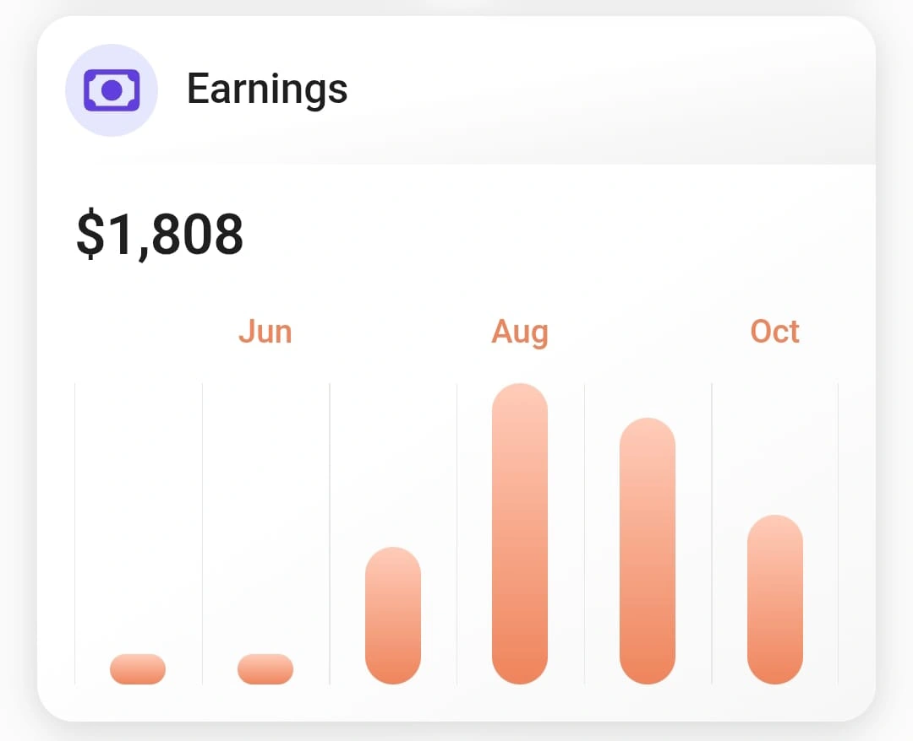

Vá direto aos projetos que pagam em dólar.
Descubra as plataformas e fontes oficiais para parar de perder tempo com buscas aleatórias e oportunidades incompatíveis.
Trabalho remoto · Projetos internacionais · Pagamento em dólar
Aprenda a encontrar projetos internacionais, disputar oportunidades e executar o trabalho pelo qual empresas pagam — para construir uma nova fonte de renda, de casa e nos seus próprios horários.

Pagamento recebido em projetos de IA.
Conheça a experiência que deu origem ao treinamento e veja como a AI Trainer Academy organiza seus próximos passos.
O vídeo começa sem som ao chegar nesta seção. Ative o áudio no player. Avanço indisponível. Resultados mostrados são dos criadores e variam de pessoa para pessoa.
Plataformas internacionais onde podem surgir projetos remunerados de treinamento e avaliação de IA
Todos os dias, respostas de IA precisam ser conferidas: alguém decide se estão corretas, úteis, seguras e dentro das instruções. Em determinados projetos, você pode fazer esse trabalho remotamente e receber em dólar.
Você não precisa criar uma IA nem virar programador. Precisa saber onde encontrar as oportunidades, como conquistar atenção na seleção e como entregar o que será pago.
Passamos por seleções, qualificações, guidelines e entregas reais em projetos de treinamento e avaliação de IA. O registro ao lado mostra US$ 1.808 recebidos na nossa própria trajetória.
Foi vivendo esse processo que entendemos o que separa quem apenas ouve falar desse mercado de quem consegue chegar às oportunidades e disputar espaço nele.
Agora você recebe o caminho organizado — sem precisar descobrir tudo sozinho, errando no escuro.
QUERO SEGUIR UM CAMINHO JÁ TESTADOPara transformar projetos internacionais em uma possibilidade concreta, você precisa localizar oportunidades, conquistar atenção, avançar na seleção e saber entregar.
Descubra as plataformas e fontes oficiais para parar de perder tempo com buscas aleatórias e oportunidades incompatíveis.
Transforme sua experiência em currículo e LinkedIn capazes de mostrar por que você merece avançar na seleção.
Envie a versão certa, acompanhe cada processo e pare de perder chances por requisito, prazo ou etapa esquecida.
Leia instruções, aplique critérios e pratique avaliações para estar preparado quando a oportunidade chegar.
Você recebe o mapa para encontrar trabalho, fortalecer sua candidatura e praticar exatamente o tipo de raciocínio pelo qual projetos de IA podem pagar.
17 aulas curtas, práticas e sem enrolação. Cada uma termina mais perto de uma ação que pode gerar resultado: encontrar uma oportunidade, ajustar seu perfil, avançar num processo ou treinar uma avaliação.
Curso gravado e autoguiado, com Caderno de Trabalho para acompanhar as 17 aulas. Sem mentoria individual.
Entenda quem paga por avaliações de IA, onde as oportunidades aparecem e como identificar projetos que aceitam o seu perfil.
Transforme experiências verdadeiras em um currículo direcionado ao projeto que você quer conquistar.
Apresente sua trajetória e suas competências com clareza para recrutadores e empresas internacionais.
Organize candidaturas, entenda as etapas e acompanhe retornos para não deixar uma chance de trabalho escapar por desorganização.
Conheça critérios usados em avaliações e pratique como observar respostas e justificar decisões com qualidade.
Aprenda a proteger a qualidade do seu trabalho e a acompanhar tarefas, valores e pagamentos quando conquistar um projeto.
Da busca à entrega, avance por um caminho claro até oportunidades que podem virar pagamento.
Use o Caderno online ou em PDF para sair do conteúdo com perfil, registros e ações prontas.
Treine avaliações autorais agora para chegar mais preparado às tarefas de um projeto real.
Projetos internacionais podem abrir e fechar sem aviso. O Radar de Oportunidades monitora fontes, organiza possibilidades e leva você até as páginas oficiais — para transformar procura perdida em ação.
Você acompanha candidaturas, etapas e próximas ações em um só lugar, sem depender de dezenas de abas, anotações soltas ou memória.
Além dos 30 dias já incluídos no curso, há uma opção de 3 meses de Radar por R$ 47 no checkout — cerca de R$ 15,67 por mês.
É opcional: você decide se quer adicionar ao pedido. Seus 30 dias incluídos permanecem mesmo sem essa escolha.A continuidade mensal do Radar por R$ 29,90 também é opcional e contratada separadamente. O acesso ao curso segue por 12 meses.
Visual demonstrativo. Oportunidades e requisitos dependem das empresas.
Não é dinheiro fácil. É um caminho para quem aceita aprender, candidatar-se e entregar qualidade em troca de mais autonomia.
Você pode continuar assistindo de fora enquanto outras pessoas encontram trabalho remoto — ou aprender onde procurar, como disputar atenção e o que fazer quando a tarefa chegar.
Por 12x de R$ 20,35 ou R$ 197 à vista no Pix, você recebe o caminho completo para entrar em movimento. E começa com 30 dias de Radar para localizar oportunidades sem depender apenas de buscas soltas.
De R$ 597,00 por
ou R$ 197 à vista no Pix
R$ 400 a menos no valor do treinamento.
A Cakto acrescenta a taxa de serviço no checkout: total à vista de R$ 197,99 ou 12x de R$ 20,43.
Compra segura pela Cakto · 12x de R$ 20,35 + taxa
O treinamento prepara você para buscar oportunidades, mas não promete contratação ou renda. A opção de 3 meses do Radar é somada somente se você a adicionar no checkout. Tarefas, valores e pagamentos dependem de cada projeto.
Envie sua dúvida de compra pelo nosso WhatsApp oficial.
Sem esconder as variáveis: veja como oportunidades, aprovação e pagamentos funcionam.
O curso foi criado justamente para mostrar o caminho desde o início: onde procurar, como preparar seu perfil e como praticar avaliações. Conseguir um projeto depende dos requisitos, da seleção e da disponibilidade de cada empresa, mas você deixa de buscar no escuro e passa a agir com preparação.
Não existe um valor único. Pagamento, volume de tarefas, moeda, duração e frequência variam muito entre empresas e projetos. A captura de US$ 1.808 mostra uma experiência real dos criadores, não uma média nem uma promessa de resultado para quem fizer o curso.
Não é necessário saber programar para acompanhar o curso. Existem projetos voltados a linguagem, revisão e avaliação textual, além de projetos que exigem conhecimento técnico. Você aprende a conferir os requisitos antes de se candidatar.
Uma base funcional de leitura e escrita ajuda bastante, inclusive para entender instruções e participar de processos. Algumas oportunidades são voltadas ao português, mas isso não dispensa verificar o idioma exigido no projeto. O treinamento é em português e não substitui um curso de inglês.
Isso depende de encontrar uma oportunidade compatível, ser aprovado, concluir qualificações e receber tarefas. Algumas pessoas podem avançar mais rápido e outras levar mais tempo. O curso encurta a curva de aprendizado, mas não controla as decisões das empresas.
O pagamento único inclui o curso com 6 módulos e 17 aulas curtas, um Caderno de Trabalho preenchível, exercícios e 12 meses de acesso ao curso e às atualizações. Também inclui 30 dias de acesso ao Radar de Oportunidades. A Cakto acrescenta R$ 0,99 de taxa de serviço; o total à vista no checkout é R$ 197,99.
O curso inclui 30 dias. No checkout, há uma opção de 3 meses de Radar por R$ 47. Ela só entra no pedido se você a adicionar. Se não adicionar, os 30 dias incluídos no curso permanecem. A continuidade mensal por R$ 29,90 é opcional e contratada separadamente.
Sim. As aulas são gravadas e o processo pode ser aplicado no seu ritmo. Você pode começar buscando uma renda complementar, reservar horários para candidaturas e aumentar sua dedicação somente quando surgirem projetos e tarefas reais.
O curso é gravado e autoguiado, para estudar no seu ritmo. Não inclui aulas ao vivo, mentoria individual ou WhatsApp para dúvidas das aulas. Dúvidas administrativas podem ser encaminhadas ao e-mail oficial.
Pode ser explorado com os dois objetivos, mas o resultado depende de aprovação, disponibilidade de tarefas, valores e constância dos projetos. O caminho mais responsável é começar como uma nova possibilidade de renda e ampliar sua dedicação conforme surgirem trabalhos reais.
Seu computador pode continuar sendo apenas uma ferramenta de consumo — ou se tornar a porta de entrada para projetos internacionais, mais autonomia e uma nova possibilidade de renda.
QUERO COMEÇAR MINHA BUSCA EM DÓLAR12x de R$ 20,35 + taxa da Cakto · ou R$ 197 à vista no Pix · 12 meses de curso + 30 dias de Radar